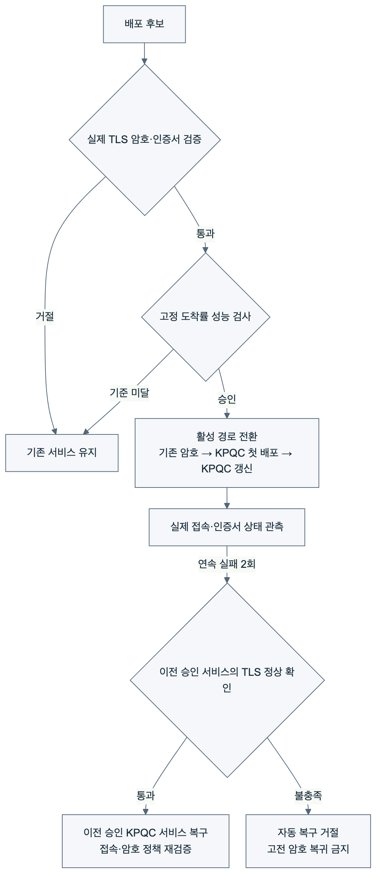
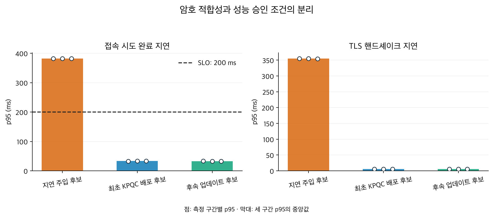

기존 TLS 성능 측정과 암호 정책 게이트를 연결해 레거시 서비스에서 KPQC로의 전환 → 성능 기반 배포 승인 → 장애 시 이전 승인 KPQC 버전 복구를 검증했다. GitHub Actions 실행, 소스 c232f7d. 24개 검증 항목 통과. 워크플로는 기존 두 EC2의 중지 완료와 임시 SSH 규칙 제거를 확인했다.

서울 동일 가용 영역의 m7i.large 서버·클라이언트 두 대, 컨테이너별 2 CPU/512 MiB, MTU (Maximum Transmission Unit) 1500의 Docker 브리지 환경이다. 초기 서비스는 X25519 + ECDSA P-256, KPQC 후보는 SMAUG1 + HAETAE2다. 최초 KPQC 배포와 후속 업데이트는 동일 암호 조합을 사용하며, 서로 다른 인증서와 서버 프로세스로 구분한다. TLS (Transport Layer Security) 1.3의 전체 핸드셰이크를 사용하며, 직접 신뢰한 서버 인증서와 사전 준비된 전환 가능 클라이언트를 사용한다.
SLO (Service Level Objective)는 시험 전에 고정한 모의 서비스 목표다. 후보마다 초당 10회, 10초 × 3구간의 고정 도착률로 시험한다. 각 구간에서 실패율≤1%, 200ms 내 성공 비율≥99%, 성공 접속 완료 지연 p95 ≤200 ms를 요구한다. 부하 생성 지연 p95가 50ms를 초과하거나 증적이 누락되면 승인하지 않는다.
접속 완료 지연은 예정 도착부터 C 클라이언트 종료까지이며, 스케줄 대기·프로세스 초기화·TCP·준비 신호·TLS·종료를 포함한다. 별도 기록한 순수 TLS 지연은 SSL_connect 호출 구간이다. HTTP와 업무 거래는 포함하지 않는다. 두 지표를 같은 것으로 해석하지 않는다.
최초 KPQC 배포 후보는 기존 X25519 + ECDSA P-256 서비스를 SMAUG1 + HAETAE2 서비스로 전환하기 위한 배포 대상이다. 암호·인증서 검증과 성능 기준을 통과하면 기존 서비스를 대체한다.
후속 업데이트 후보는 KPQC 도입 이후의 서비스 갱신을 모사한다. 동일한 SMAUG1 + HAETAE2를 사용하되 새로운 서버 인증서와 별도 서버 프로세스로 배포한다. 이번 실험에서 변경하는 것은 인증서와 배포 대상이며, 암호 알고리즘과 업무 기능은 변경하지 않는다.
후속 업데이트를 승인·배포한 다음 신규 배포 서비스에 장애를 주입한다. 최초 KPQC 배포로 승인받은 서비스가 이때의 이전 승인 서비스다. 해당 서비스의 현재 TLS 연결·인증서·암호 정책을 확인한 뒤 연결 경로를 복구한다. 두 단계는 KPQC 최초 도입과 도입 후 갱신·장애 복구를 각각 검증하며, 복구 후에도 KPQC 구성을 유지한다.
모든 후보의 암호 검사는 통과했다. 지연 주입 후보에는 서버의 TLS 처리 시작 전 350ms 대기를 의도적으로 넣었다. 이는 성능 회귀 검출 시험이며 PQC 알고리즘의 본래 성능이 아니다. 아래 각 값은 100개 예정 시도의 한 측정 구간에서 구한 성공 접속 완료 지연 p95(ms)다.
| 후보 | 암호 검사 | 최종 승인 | 세 구간 p95(ms) |
|---|---|---|---|
| 지연 주입 후보 | 통과 | 거절 | 382.56, 382.46, 381.96 |
| 최초 KPQC 배포 후보 | 통과 | 승인 | 32.99, 33.19, 33.28 |
| 후속 업데이트 후보 | 통과 | 승인 | 33.20, 32.56, 32.74 |

지연 후보의 승격 요청은 거절되고 기존 레거시 서비스가 유지됐다. 최초 KPQC 배포 후보의 승인 후 실제 서버 인증서와 협상 코드가 KPQC로 바뀌었으며, 이어서 후속 업데이트 후보도 승인됐다. 성능 측정 증적은 후보 세대·인증서·정책 식별자와 연결하고 승인 시 다시 판정한다.
신규 배포 서비스의 서버 프로세스 그룹을 중단한 뒤, 상태 관측에서 연속 두 번 실패하면 이전 승인 서비스의 현재 접속·인증서·승인 이력을 확인해 자동 복구했다. 고전 버전, 다른 인증서, 오래된 복구 증적은 거절했다.
복구 시간은 제어기의 동일 단조 시계로 측정하며 SSH 제어 왕복 시간을 포함한다. 장애 기간의 실패를 숨기지 않으며 무중단 결과로 표현하지 않는다. 기존 TCP 세션이나 금융 거래의 보존을 검증한 것은 아니다.
기존 서버의 유휴 accept 시간 초과 시 작업자가 종료되던 문제를 수정했다. 17초 유휴 후 작업자8개와 정상 접속을 확인했고, 승인된 이전 서비스는 다음 후보 측정 동안에도 복구 대상으로 유지했다.
Mac amd64 에뮬레이션 전체 시험에서는 정상 후보의 100개 중2개가200ms를 넘어서 성능 게이트가 거절한 기록도 보존했다. 기준을 완화하지 않고 네이티브 Linux 전체 사전시험 및 AWS 시험을 분리했다. 수치는 이번 AWS 실행에 한정한다.
이 실험은 제한된 부하에서 승인·거절과 복구 경로의 기능을 보여준다. 최대 처리량·금융 업무 SLO·장기간 운영 가용성·자동 코드 변환을 입증하지 않는다. 고전→KPQC 전환과 이후 신규 배포 서비스에서 이전 승인 서비스로의 복구를 구분하며, 전환 후 고전 서비스로 복귀하지 않는다.